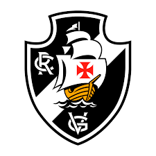

Este site apresenta o projeto inovador que irá transformar o Vasco da Gama, um dos maiores clubes do Brasil, e levá-lo de volta ao topo do futebol mundial.
OBJETIVOS
Reestruturar a gestão do clube, trazendo ídolos históricos para a administração, renovando o conselho e fortalecendo a relação com a torcida;
Criar uma rede de observadores internacionais, com a missão de descobrir novos talentos para o time, trazendo promessas do futebol global;
Desenvolver todos os aspectos do clube, desde o apoio psicológico dos atletas até a modernização do nosso Centro de Treinamento (CT) e estrutura de jogo;
INSPIRAÇÃO

Um exemplo de luta e superação, sempre buscando o topo!